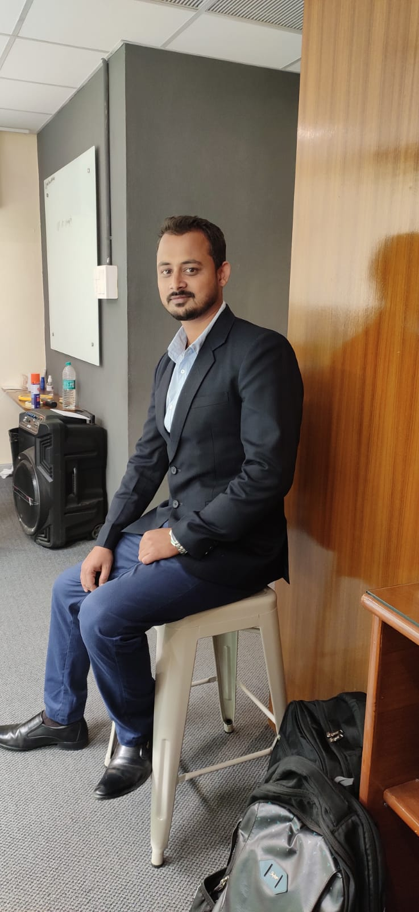

Rohit Kumar Das
I design and build the control-plane intelligence behind next-generation networks — where Software-Defined Networking meets the Internet of Things, Edge AI, and Blockchain.
About

Dr. Rohit Kumar Das
Department of Computer Science and Engineering, IIITDM Kurnool
I am currently working as an Assistant Professor at IIITDM Kurnool, Andhra Pradesh, India. I am a native of Assam and was born in Mizoram.
I completed my Ph.D. on the development of a Software-Defined Network (SDN) controller for the Internet of Things (IoT), under the guidance of Prof. Goutam Saha and Dr. Arnab Kumar Maji at North-Eastern Hill University, Shillong, Meghalaya, in 2021. That work focused on the control plane of SDN-based IoT networks — proposing architectures that later became the foundation of my ongoing research programme.
Recent Updates
- 29 Jul 2026Coordinated and conducted a One-Day National Ph.D. Colloquium at IIITDM Kurnool.
- 8 May 2026Delivered an invited talk on AI-Driven Business Intelligence & Decision Support at JAIN (Deemed-to-be University), Bangalore — FDP on "AI for Business Analytics."
- 2026Co-authored article "Taxonomy of threats, security mechanisms, and regulatory frameworks for cargo delivery drones" accepted in Journal of Transportation Security.
- Feb 2026Patent "Smart Automated IoT Based Food Feeding System" officially granted.
- 2026Book "Software-Defined Networking for IoT Systems: Architecture, Integration, and Applications" published with John Wiley & Sons.
- 2026Book chapter "Dynamic Optimization of 6G Networks with AI-Driven SDN Approaches" published.
- Jul 2025Filed patent application for a Brain-Computer Interface (BCI) system to control wheelchair movement for physically challenged individuals.
- May 2025Joined IIITDM Kurnool, Andhra Pradesh, as Assistant Professor.
- Apr 2025Filed patent application for a structural health monitoring & emergency alert system for infrastructure.
- Nov 2024Patent "Multi-Purpose Switch Adaptable for a Specific SDN Based IoT Architecture" granted.
- Nov 2024Conference paper on network topology performance in SDN-based Edge IoT published in Springer LNNS (ICDEC 2023).
- Aug 2024Organized a five-day faculty workshop on Outcome-Based Education and NEP at VIT-AP University.
- Mar 2024Patent "An improved SDN based IoT system" granted.
Research
My research spans the Internet of Things (IoT), Software-Defined Networks (SDN), Edge Computing, Edge AI, and Blockchain.
Ph.D. Summary
During my Ph.D., I specialised in SDN and IoT networks, proposing architectures including SD-6LN, 6LE-SDN, Nx-IoT, FT-SDN, and FoSDN. I also developed a lightweight SDN-based IoT protocol to improve interoperability between SDN and IoT networks. Through evaluation on real-time testbeds and simulations focused on edge-based IoT networks, this work significantly improved scalability, availability, and reliability in SDN-based IoT networks — with outcomes published across journals, conferences, and patent filings.
Research Profiles
Education & Experience
- 2018 – 2021Ph.D., Information TechnologyNorth-Eastern Hill University, Shillong, Meghalaya, India
- May 2025 – PresentAssistant Professor, IIITDM Kurnool, Andhra Pradesh
- May 2021 – May 2025Senior Grade 2, VIT-AP University, Andhra Pradesh
- Aug 2020 – May 2021Assistant Professor, Sikkim Manipal Institute of Technology, Sikkim
- 2018Visiting Faculty, MIT University, Shillong Campus, Meghalaya
- Aug 2014 – Jul 2016Guest Faculty, Dept. of IT, Mizoram University, Mizoram
Ph.D. & M.Tech Student Guidance
All scholars under my guidance are working in the broad areas of Software-Defined Networking (SDN) and Internet of Things (IoT), with a primary focus on Edge Computing and Edge AI.
Ph.D. Student
- Sai Kuntala Sriya Admission 2026
M.Tech Students
- Avinash Singh Admission 2025
- Pavan Chandra Punem Admission 2025
Publications
- Roy, K. S., Kumar, M. S., Deb, S., Das, R. K., & Hassan, S. M. (2026). Taxonomy of threats, security mechanisms, and regulatory frameworks for cargo delivery drones.
- Das, R. K., Ahmed, N., Maji, A. K., & Saha, G. (2023). Edge Controller-Assisted SDN Architecture for Internet of Things.
- Gadhamsetty, V. D. A., & Das, R. K. (2023). ASM-SDN: an automated station migration system in cluster-based heterogeneous software-defined network.
- Das, R. K., Ahmed, N., Maji, A. K., & Saha, G. (2023). Nx-IoT: Improvement of Conventional IoT Framework by Incorporating SDN Infrastructure.
- Rahman, M. S., & Das, R. K. (2022). RTID: On-demand real-time data processing for IoT network.
- Das, R. K., Maji, A. K., & Saha, G. (2022). SD-6LN: improved existing internet of things framework by incorporating software defined network approach.
- Das, R. K., Ahmed, N., Pohrmen, F. H., Maji, A. K., & Saha, G. (2020). 6LESDN: An Edge-Based Software-Defined Network for Internet of Things.
- Das, R. K., Pohrmen, F. H., Maji, A. K., & Saha, G. (2020). FT-SDN: A Fault Tolerant Distributed Architecture for Software Defined Network.
- Pohrmen, F. H., Das, R. K., & Saha, G. (2019). Blockchain-based security aspects in heterogeneous Internet-of-Things networks: A survey.
- Kumar Das, R., Khongbuh, W., Hazel Pohrmen, F., Kumar Maji, A., & Saha, G. (2019). Controller Placement and Selection Strategy for SDN.
- Das, R. K., Gupta, A., Boda, S., Joshi, P., & Ahmed, N. (2023). A study on the performance of network topologies in SDN-based Edge IoT Network.
- Gadhamsetty, V. D. A., & Das, R. K. (2023). A Study on Advanced Networking using Intelligent Systems Applications.
- Das, R. K., Jha, M., & Harizan, S. (2022). Performance Appraisal of 6LoWPAN and OpenFlow in SDN Enabled Edge-Based IoT Network.
- Harizan, S., Kuila, P., & Das, R. K. (2022). HSA Based Sensor Nodes Deployment Strategy for Coverage and Connectivity in WSNs.
- Das, R. K., Pohrmen, F. H., Maji, A. K., & Saha, G. (2021). FoSDN: A Software-Defined Edge Computation for Resource Constraint Network.
- Das, R. K., Maji, A. K., & Saha, G. (2020). SD-6LN: Improved Existing IoT Framework by Incorporating SDN Approach.
- Marshoodulla, S. Z., Das, R. K., & Saha, G. (2019). Big Data Issues in SDN Based IoT: A Review.
- Pohrmen, F. H., Das, R. K., Khongbuh, W., & Saha, G. (2018). Blockchain-based security aspects in Internet of Things network.
- Das, R. K., Das, B., & Roy, S. (2014). Performance Appraisal of Learning Automata in Networks.
Book Authored
- Das, R. K., & Saha, G. (2026). Software-Defined Networking for IoT Systems: Architecture, Integration, and Applications.
Book Chapters
- Das, R. K., & Bordoloi, M. (2026). Dynamic Optimization of 6G Networks with AI-Driven SDN Approaches.
- Selvaraj, P., Das, R. K., Burugari, V. K., Karri, G. R., Kanmani, P., & Namburu, A. (2024). Blockchain-Based Energy Transmission System.
- Das, R. K., & Roy, S. (2023). An ML-Driven SDN Agent for Blockchain-Based Data Authentication for IoT Network.
- Smart Automated IoT Based Food Feeding System Granted 25/02/2026
- Multi-Purpose Switch Adaptable for a Specific SDN Based IoT Architecture Granted 28/11/2024
- An improved SDN based IoT system Granted 06/03/2024
- Brain-Computer Interface (BCI) System for Controlling Wheelchair Movement for Physically Challenged Individuals Filed 01/07/2025
- System and Method for Monitoring Structural Health of Infrastructures and Transmitting Emergency Alerts Filed 10/04/2025
Professional Service
Journal Reviewer
- IEEE Internet of Things Journal
- IEEE Trans. on Vehicular Technology
- IEEE Trans. on Mobile Computing
- IEEE Trans. on Wireless Communications
- IEEE Sensors Journal
- Wiley Trans. on Emerging Telecom. Technologies
- Springer Wireless Personal Communications
Technical Program Committee
- ICDSNE 2023, NIT Agartala
- I3CS 2022, NEHU Shillong
- SHI 2022, Oxford, UK
- ICACCP 2021, SMIT Sikkim
Editorial Board
- PriMera Scientific Engineering (PSEN)
- Intl. Journal of Sensors and Sensor Networks
Professional Membership
- IEEE Senior Member
- ACM
Workshops Organized
- 29 Jul 2026One-Day National Ph.D. Colloquium — IIITDM Kurnool Event Coordinator
- 27–31 Aug 2024Five-Day Faculty Workshop on "Outcome-based Education and National Education Policy" — VIT-AP University
- 1–5 Mar 2022Five-Day Faculty Workshop on "Research Proposal Writing & Funding Opportunities" — VIT-AP University
- 9 May 2022National Workshop on "CUDA Programming with Python," sponsored by NVIDIA DLI — VIT-AP University
Invited Talks & Resource Person
- 8 May 2026"AI-Driven Business Intelligence & Decision Support" — JAIN (Deemed-to-be University), Bangalore, FDP on AI for Business Analytics
- 8 Sep 2023"Transforming Real-Time Edge Applications with EdgeAI" — Mizoram University Short-Term Course on ICT
- 28 Feb 2023"IoT-enabled Smart Sustainable Cities" — IPSG College of Arts & Science, Coimbatore
- 19 Jul 2022"Drawbacks of IoT and its improvement" — ICFAI University, Agartala
- Oct 2020Hands-on Latex Workshop — SMIT, Sikkim
- Oct 2020ATAL Academy Programme, "Improved IoT platforms in Simulation" — NEHU, Shillong
- Sep–Oct 2019ATAL Academy Programme, "IoT Applications: Software based simulation" — Mizoram University
Let's talk research.
Open to collaboration, PhD/Masters supervision inquiries, reviewing, and speaking invitations in SDN, IoT, and Edge AI.
IIITDM Kurnool, Andhra Pradesh 518008